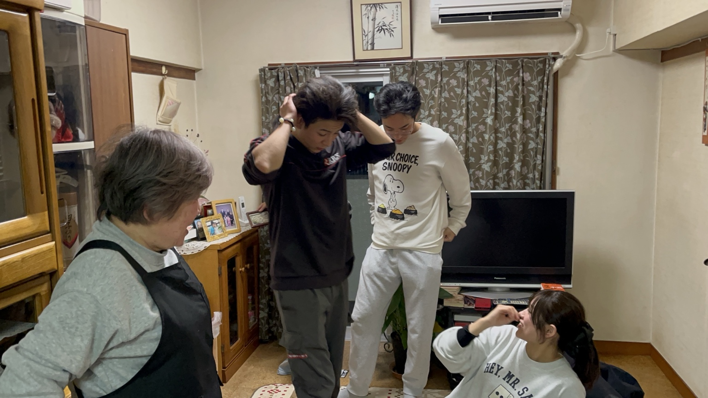
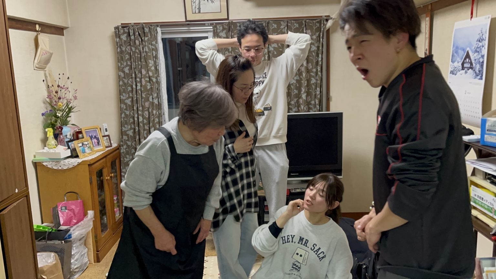
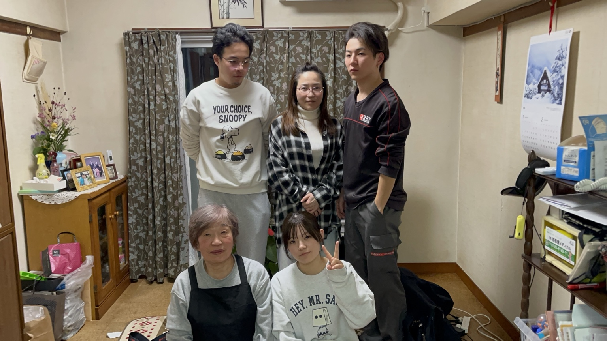
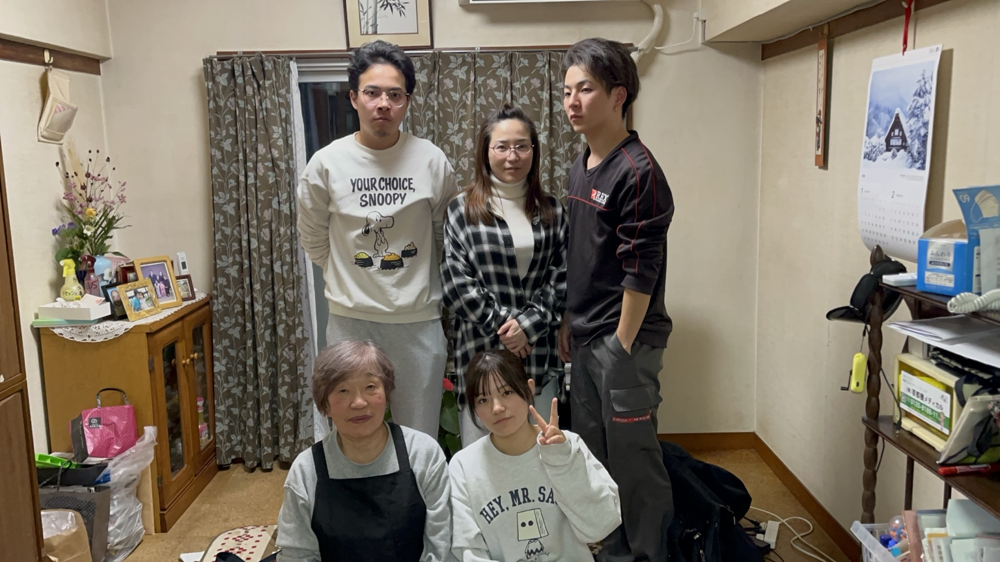
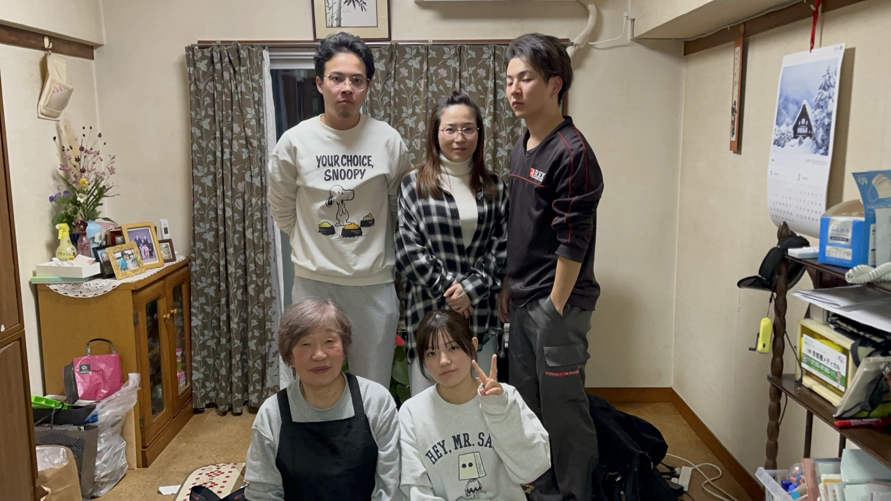
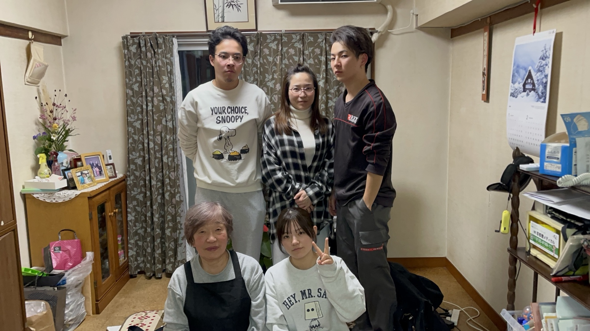
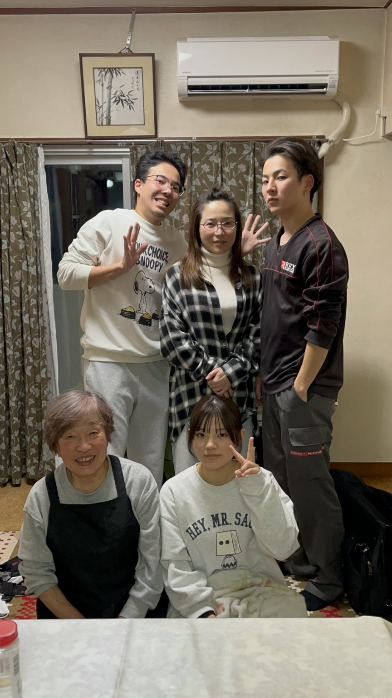
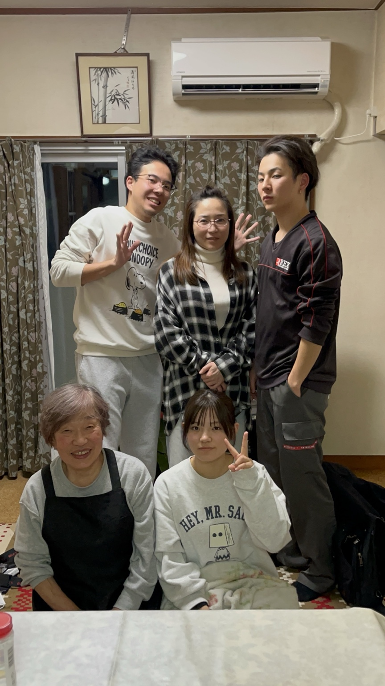
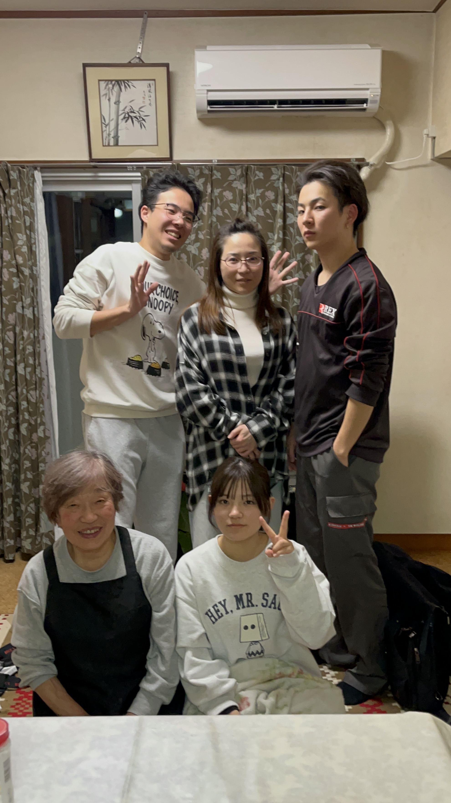

2026.01.04 · FAMILY
永田のおばあちゃんの家で、
お正月のご挨拶。
お正月、みんなで永田のおばあちゃんのお家へ。
もうすぐ50歳になる裕子さんも、お母さんの前ではまだまだ子ども。ちょっぴり甘えん坊になる、そんな家族のひととき。
みんなで並んで記念撮影。かしこまった集合写真のあとには、いつものにぎやかな表情も。何気ないお正月の一日が、かけがえのない思い出になりました。
写真アルバム 10枚
写真をタップすると大きく表示できます。









